|
Genellikle seri ve takým olarak, iç içe geçebilecek þekilde düþünülen; kolay olarak görünen ama tasarýmýnda ve imalatýnda bir çok önemli kurallara uyulmasý gereken tabaklar, saksý ve saksý altlýklarý, kovalar, saklama kaplarý gibi yuvarlak ve dikdörtgen kesitli kalýplarýnýn tasarýmýnda dikkat edilmesi gereken noktalarý sýra ile inceleyelim.
Tasarým Nüanslarý
- Ürünler iç içe geçebilecek ve vakum oluþturmayacak þekilde tasarlanmalýdýr. Vakum iç içe geçen ürünlerin, ayrýlmalarýný zorlaþtýrýr. Eðer bu açý verilmesi zorunlu ise, ürünün iç tarafýna en az üç tane feder konularak, ürün yan duvarlarýnýn birbirine deðmesi önlenmelidir.
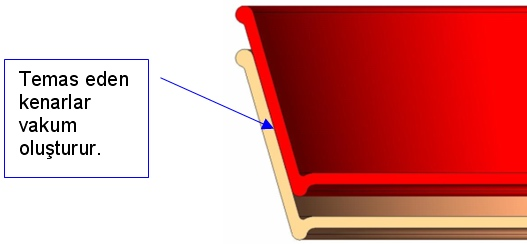
Resim 1 - Vakum oluþturan uygunsuz tasarým
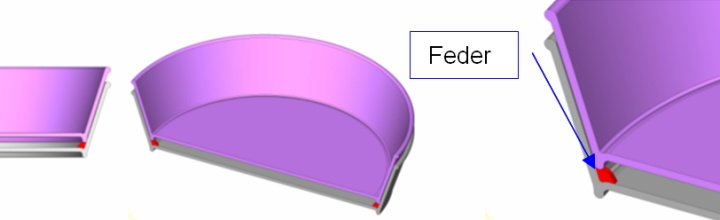
Resim 2 - Vakum oluþmasýný önlemek için, kýrmýzý renkle gösterilen federler konuluþtur.
- Ürünlerin en altýna ayak görevi gören ve tabaðýn çarpýlmasýný önleyen federler atýlmalýdýr.
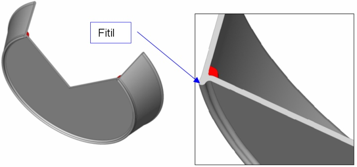
Resim 3 - Tabandaki çarpýlmayý önlemek için atýlan taban fitili
- Ürünün aðýz kýsmýna fitil atýlmalýdýr. Bu fitil kenarda çapak oluþmasýný engellediði gibi, kalýn bir hat oluþturduðu için, ürünün dayanýmýný artýrarak, çarpýlmasýný da önler. Ayrýca keskin köþeler ve oluþan çapaklar, kullanýcýnýn elini kesme riskine sahiptir.
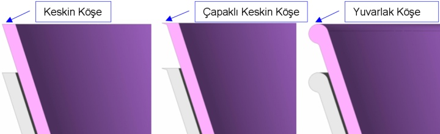
Resim 4 - Kullanýcýnýn elini kesmemesi ve çarpýlmaya karþý daha dayanýklý olmasý amacýyla ürünün aðzý yuvarlatýlmýþtýr.
- Et kalýnlýðý mümkün olduðunca eþit tutulmalýdýr. Artan et kalýnlýklarý, farklý soðuma hýzlarýndan dolayý, bölgesel çöküntüler oluþturur.
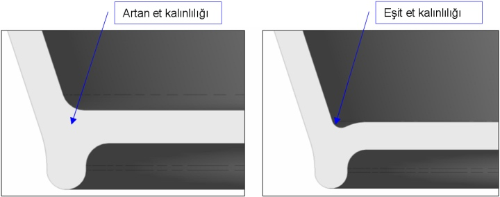
Resim 5 - Et kalýnlýklarý.
- Ürünün, kalýbýn hareketli kýsmýnda kalmasý için, hareketli çekirdek üzerine, estetik kusur yaratmayacak büyüklük ve formda çekiciler (ters açýlar/undercuts) atýlmalýdýr.
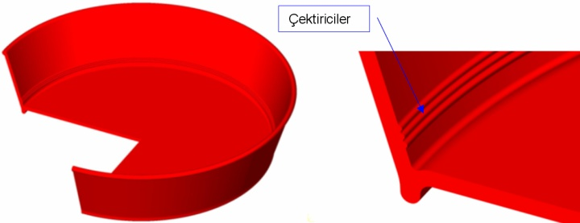
Resim 6 - Ürünün sabit tarafta kalmasýný önleyen çektiriciler.
- Bir büyük boy ve bir küçük boy ürünler birbirleri ile uyumlu açýlarda tasarlanmalýdýr.
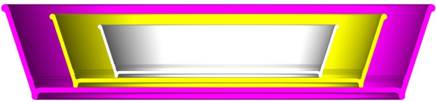
Resim 7 - Ayný formlar ve açýlara sahip, üçlü bir tabak takýmý
- Yolluk giriþindeki, plastik parça kalýntýsýnýn, ürünün düz oturmasýna engel olmamasý için, yolluk giriþ noktasý içe doðru yapýlmalýdýr.
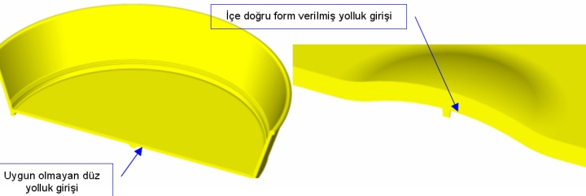
Resim 8 - Yolluk giriþ formlarý.
- Estetik problem yaratmasý için, yolluk giriþi, ürünün görünen ve kullanýlan tarafýnda olmamalýdýr.
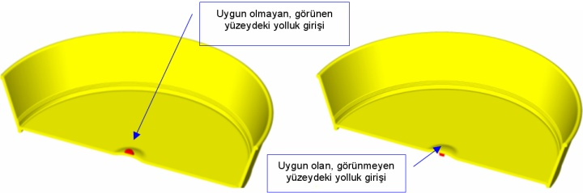
Resim 9 - Yolluk giriþ yerleri
- Sýcak ya da soðuk yolluk olsun, ürün tabanýndan yolluk giriþi en ideal olan yolluktur.
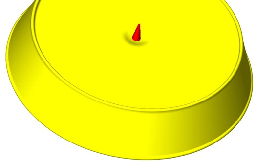
Resim 10 - Ýdeal yolluk giriþ noktasý
- Bu tarz yuvarlak ya da dikdörtgen formlu ürünlerin yolluk giriþleri, ürün tabanýnda deðil de, yandan iðne yolluk ya da yaprak yolluk þeklinde yapýlmasý, erkek çekirdeklerin enjeksiyon baskýsý altýnda, yana doðru yatmalarýna ve ürün et kalýnlýðýnýn dengesiz olmasýna, yolluk giriþ noktasýnýn tam karþýsýnda soðuk birleþim (kaynak) izi oluþmasýna sebep olur.
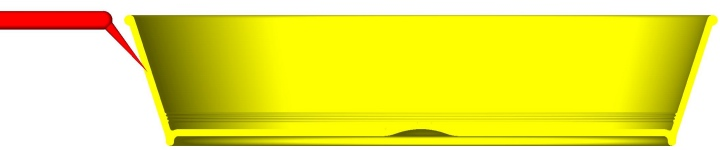
Resim 11 - Yandan iðne yolluk giriþli kalýp
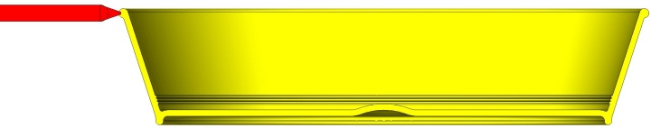
Resim 12 - Yandan yaprak yolluk giriþli kalýp
|